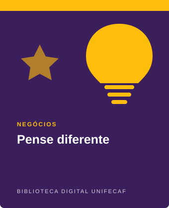
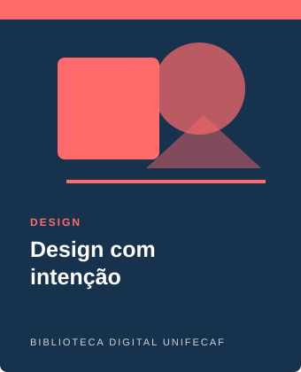
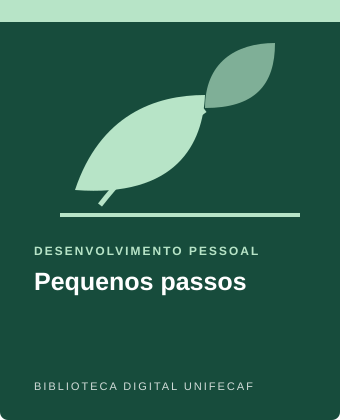
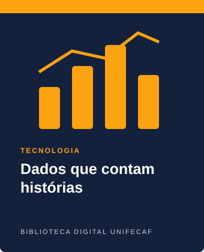
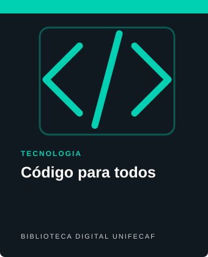
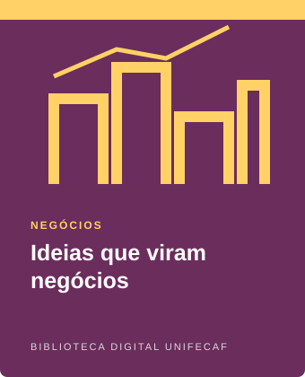
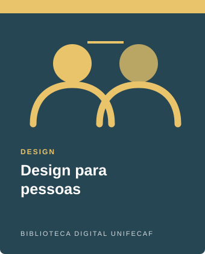
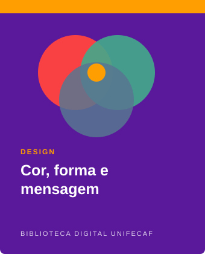
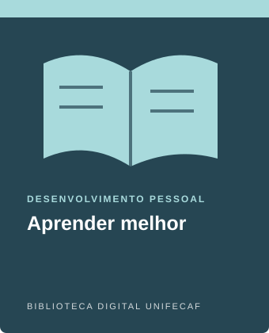
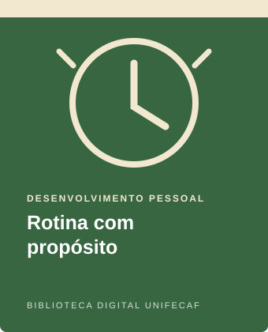

Tecnologia
O futuro é agora
Uma introdução às tecnologias que transformam a sociedade, com exemplos de inovação, inteligência artificial e mudanças no cotidiano.
Conhecer livroExplore um universo de conhecimento. Encontre livros, conteúdos acadêmicos e novas ideias para acompanhar sua jornada.
Aprenda no seu ritmoConhecimento para cada etapa da sua jornada
Uma seleção para despertar sua curiosidade e ampliar suas possibilidades.
Uma introdução às tecnologias que transformam a sociedade, com exemplos de inovação, inteligência artificial e mudanças no cotidiano.
Conhecer livro
Explore criatividade, empreendedorismo e tomada de decisão para transformar boas ideias em projetos concretos.
Conhecer livro
Conheça princípios de design centrado nas pessoas, hierarquia visual, acessibilidade e criação de experiências digitais úteis.
Conhecer livro
Descubra como metas realistas, hábitos consistentes e pequenas ações podem apoiar o aprendizado e o desenvolvimento pessoal.
Conhecer livro
Entenda como coletar, interpretar e comunicar dados para identificar padrões e apoiar decisões mais conscientes.
Conhecer livro
Conheça os fundamentos da programação, lógica computacional e resolução de problemas por meio de algoritmos e exemplos práticos.
Conhecer livroUma introdução à comunicação, colaboração e organização de equipes para alcançar objetivos em conjunto.
Conhecer livro
Aprenda a observar oportunidades, avaliar ideias e planejar os primeiros passos para desenvolver um projeto ou negócio.
Conhecer livro
Explore usabilidade, acessibilidade e pesquisa com usuários para criar produtos e serviços mais simples e inclusivos.
Conhecer livro
Descubra como cores, formas, tipografia e composição visual ajudam a transmitir mensagens e construir identidades.
Conhecer livro
Conheça estratégias de estudo, foco, organização e revisão para aproveitar melhor o tempo dedicado à aprendizagem.
Conhecer livro
Reflita sobre como organizar a rotina, equilibrar metas e descanso e construir hábitos sustentáveis ao longo do tempo.
Conhecer livroOs títulos e as capas exibidos são fictícios e servem como exemplos ilustrativos do acervo.
Os títulos exibidos são exemplos ilustrativos de apresentação visual do acervo.Um ambiente digital para despertar a curiosidade, explorar novos assuntos e apoiar sua jornada de aprendizagem.
A Biblioteca Digital UniFECAF é um protótipo acadêmico pensado para tornar a descoberta de conteúdos simples e agradável. A proposta reúne livros em destaque e categorias temáticas em uma experiência organizada, para que o visitante encontre assuntos de interesse e conheça novas ideias.
Explore as páginas dos livros para ler suas apresentações, navegue pelas categorias e use o site como ponto de partida para descobrir temas ligados à tecnologia, aos negócios, ao design e ao desenvolvimento pessoal.
Seções organizadas para facilitar a exploração do conteúdo.
Áreas de conhecimento para diferentes interesses e objetivos.
Uma experiência adaptada para computadores, tablets e celulares.
Observação: os livros e suas descrições são exemplos ilustrativos criados para este projeto, não representam um catálogo oficial da UniFECAF.
A UniFECAF é um centro universitário que oferece opções de graduação presencial, semipresencial e a distância. Sua proposta valoriza uma experiência educacional prática, próxima dos estudantes e conectada ao desenvolvimento profissional.
Esta página é um protótipo acadêmico de Biblioteca Digital, criado para facilitar a descoberta de conteúdos e representar uma experiência de navegação ligada à vida universitária. Os livros apresentados são exemplos ilustrativos, não um catálogo oficial da instituição.
Conheça os canais oficiais para consultar cursos, história institucional e informações acadêmicas.
Conheça nossa história Conheça os cursos